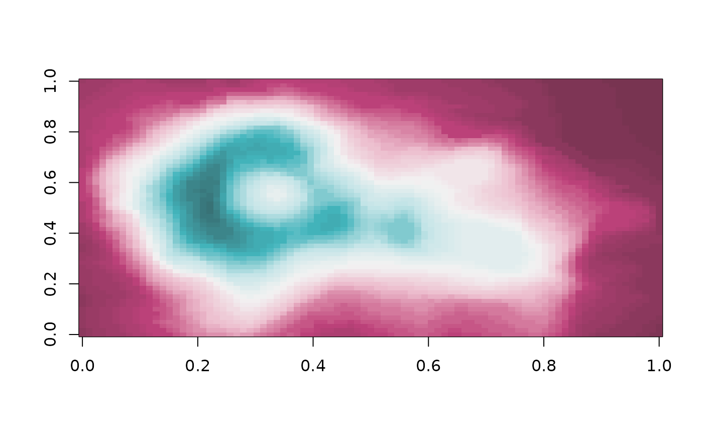

stadl_pal.RdGet colors from a STADL palette
stadl_pal(palette = "raspberry_turquoise", n = NULL, reverse = FALSE)Name of a palette, see stadl_palette_names().
Number of colors. NULL (default) returns the palette's anchor
colors. Other values interpolate in CIE Lab space.
Logical. Reverse the order of the colors?
A character vector of hex codes.
stadl_palette_names()
#> [1] "raspberry" "mustard" "turquoise"
#> [4] "olive" "petrol" "grey"
#> [7] "raspberry_turquoise" "raspberry_petrol" "mustard_petrol"
#> [10] "olive_turquoise"
stadl_palette_names("diverging")
#> [1] "raspberry_turquoise" "raspberry_petrol" "mustard_petrol"
#> [4] "olive_turquoise"
# anchor colors of a palette
stadl_pal("turquoise")
#> [1] "#F1F9F9" "#C2E4E7" "#7AC7CD" "#42B6BE" "#2E7F85" "#274143"
# 7 interpolated colors, dark to light
stadl_pal("raspberry", n = 7, reverse = TRUE)
#> [1] "#412630" "#6F324B" "#A63E6D" "#C85B89" "#DB8BA9" "#EFC5D3" "#FBF0F3"
# a palette function, e.g. for base R graphics
pal <- stadl_pal_fun("raspberry_turquoise")
image(volcano, col = pal(64))
